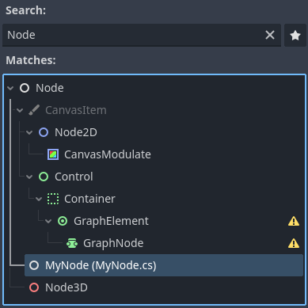
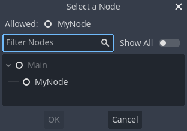
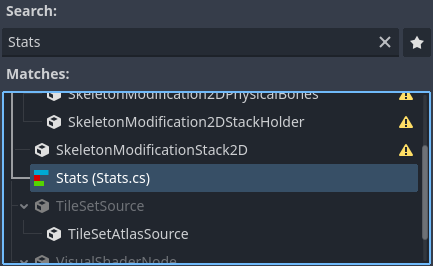
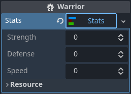

Lớp toàn cục trong C#
Lớp toàn cục (còn gọi là named script) là các kiểu được đăng ký trong trình chỉnh sửa Godot để có thể dùng thuận tiện hơn. Trong GDScript, điều này được thực hiện bằng từ khóa class_name ở đầu script. Trang này mô tả cách đạt được hiệu quả tương tự trong C#.
Lớp toàn cục xuất hiện trong các hộp thoại Add Node và Create Resource.
Nếu một thuộc tính được export là lớp toàn cục, Inspector sẽ giới hạn việc gán, chỉ cho phép instance của lớp toàn cục đó hoặc bất kỳ lớp dẫn xuất nào.
Lớp toàn cục được đăng ký bằng attribute [GlobalClass].
using Godot;
[GlobalClass]
public partial class MyNode : Node
{
}
Cảnh báo
Tên file phải khớp với tên lớp và phân biệt chữ hoa chữ thường. Ví dụ, một lớp toàn cục tên "MyNode" phải có tên file là MyNode.cs, không phải myNode.cs.
Kiểu MyNode sẽ được đăng ký là lớp toàn cục với tên trùng với tên của kiểu.

Cửa sổ Select a Node cho thuộc tính được export MyNode sẽ lọc danh sách node trong scene cho khớp với giới hạn gán.
public partial class Main : Node
{
[Export]
public MyNode MyNode { get; set; }
}

Nếu một kiểu tùy chỉnh không được đăng ký là lớp toàn cục, việc gán sẽ bị giới hạn theo kiểu Godot mà kiểu tùy chỉnh dựa trên. Ví dụ, việc gán trong Inspector cho một export kiểu MySimpleSprite2D bị giới hạn ở Sprite2D và các kiểu dẫn xuất.
public partial class MySimpleSprite2D : Sprite2D
{
}
Khi kết hợp với attribute [GlobalClass], attribute [Icon] cho phép cung cấp đường dẫn tới biểu tượng để hiển thị khi lớp được hiển thị trong trình chỉnh sửa.
using Godot;
[GlobalClass, Icon("res://Stats/StatsIcon.svg")]
public partial class Stats : Resource
{
[Export]
public int Strength { get; set; }
[Export]
public int Defense { get; set; }
[Export]
public int Speed { get; set; }
}

Lớp Stats là một resource tùy chỉnh được đăng ký là lớp toàn cục. Export thuộc tính kiểu Stats sẽ chỉ cho phép gán instance của loại resource này, và Inspector sẽ giúp bạn tạo và tải instance của kiểu này một cách dễ dàng.


Cảnh báo
Trình chỉnh sửa Godot sẽ ẩn các lớp tùy chỉnh có tên bắt đầu bằng tiền tố "Editor" trong các hộp thoại "Create New Node" hoặc "Create New Scene". Các lớp này vẫn có thể tạo instance lúc chạy qua tên lớp, nhưng bị tự động ẩn khỏi các cửa sổ trình chỉnh sửa cùng với các node tích hợp mà trình chỉnh sửa Godot sử dụng.